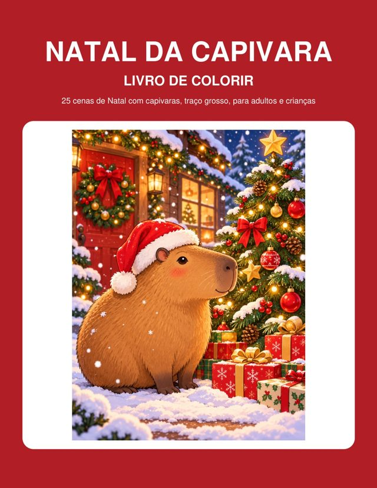
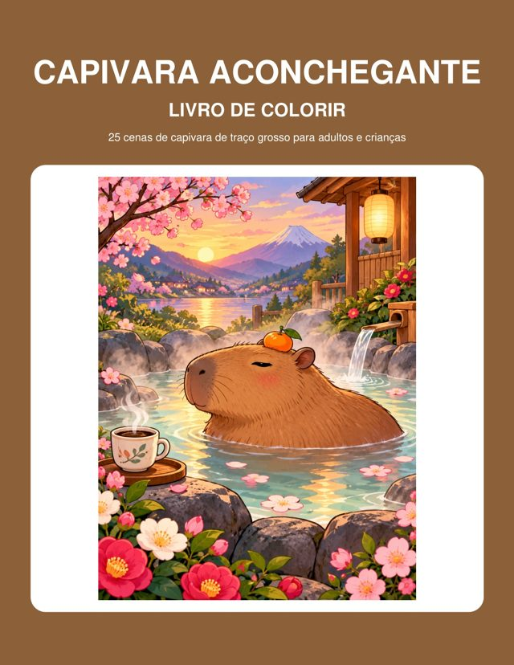
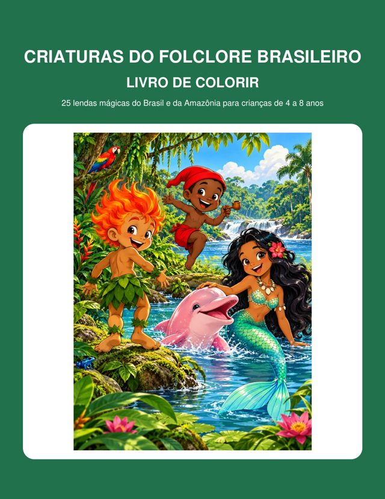
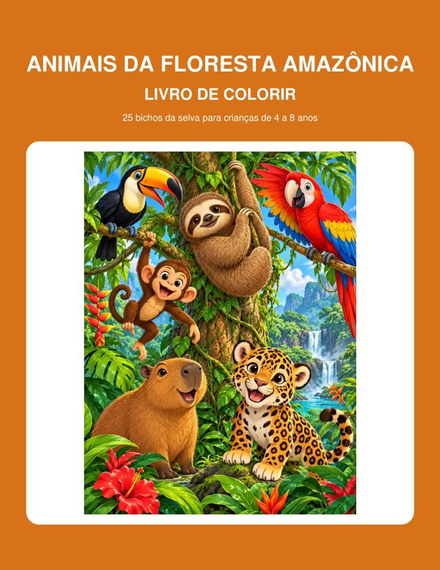

Natal da Capivara
25 cenas de Natal com a capivara mais tranquila do mundo.
PDF A4 · 25 desenhosCapivaras, lendas do folclore e bichos da Amazônia, em traço grosso. Você recebe o PDF, imprime em casa quantas vezes quiser e pinta com o que tiver na gaveta.

25 cenas de Natal com a capivara mais tranquila do mundo.
PDF A4 · 25 desenhos
Fonte termal, café, soneca e chuva na janela. 25 cenas para relaxar.
PDF A4 · 25 desenhos
Curupira, Saci, Iara, Boto, Cuca, Boitatá e mais 19 lendas.
PDF A4 · 25 desenhos
Onça, preguiça, tucano, boto-cor-de-rosa e mais 21 bichos.
PDF A4 · 25 desenhos